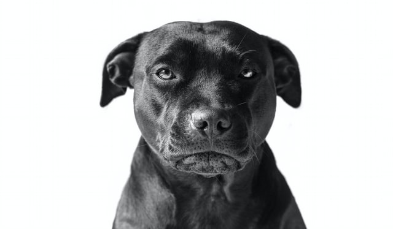

Jei trumpai, tai trumpai. Esu - muzikantė, fotografė, tekstų rašytoja, Wordpress admin panelės svetainės administratorė, teisininkė ir šiaip asmeninė psichologė (ne profesinėj sryty). Visko po truputį ir ne per daug. Šiuo metu galiu teigti, kad ir programuoju :D. Per neilgą (25 metų) savo gyvenimo laikotarpį gyvenau Mažeikių r. (ten gimiau), vasaras leisdavau Kretingoje. Po mokyklos baigimo studijavau Šiaulių universitete (Muzikos pedagogiką), po pusmečio mečiau. Galiausiai įstojau į KSU (Vilniuj), ten studijavau Tarptautinę verslo teisę. Baigusi studijas grįžau į Šiaulius, dirbau teisme, užsiėminėjau individualia teisine veikla. Visdar tęsiu gyvenimą čia.
Visa kas išvardinta aukščiau yra ir mano pomėgiai. Groju fortepijonu (baigiau muzikos mokyklą 9 metus). Turiu elektrinę gitarą - išmokau porą akordų, reiks pratęst :D Fotografuoju nuo paauglystės. Tekstus rašau taip pat nuo vaikystės (eilėraščius), dabar jau persimečiau šiaip prie vaizdelių, afroizmų. Skaitau psichologines knyga, ankščiau daugiau, dabar gal po puslapį per savaitę :D. Patinka pasivaikščiojimai, kelionės, šiaip esu informacijos rinkėja, t.y. jei žiūriu filmą tai būtinai pasiskaitau kokie aktoriai ten, jei išgirstu kokį faktą, taip pat tikrinu (galėčiau būti faktų tikrintoja ;D) ir t.t. Vaikystėje turėjau Amerikiečių stafordšyro veislės šunį. Tad visada sakiau, kad tai yra mano mylimiausia veislė. Atsikrausčius į Šiaulius nusipirkome šios veislės šunį. Apie jį apačioje...
Šuns vardas - Dodžas(trumpinys). Jau nebe šuniukas - dviejų metų vyras :D. Įdomi istorija - kai įsigijome šunį nesugalvojome kaip pavadinti. Tai pradžioj buvo ir Antstolis ir Slayer, bet apsistojome ties Dodžas - Pistacijus (nes mėgo pistacijas) Misterijus Grandinijus Ciūcka